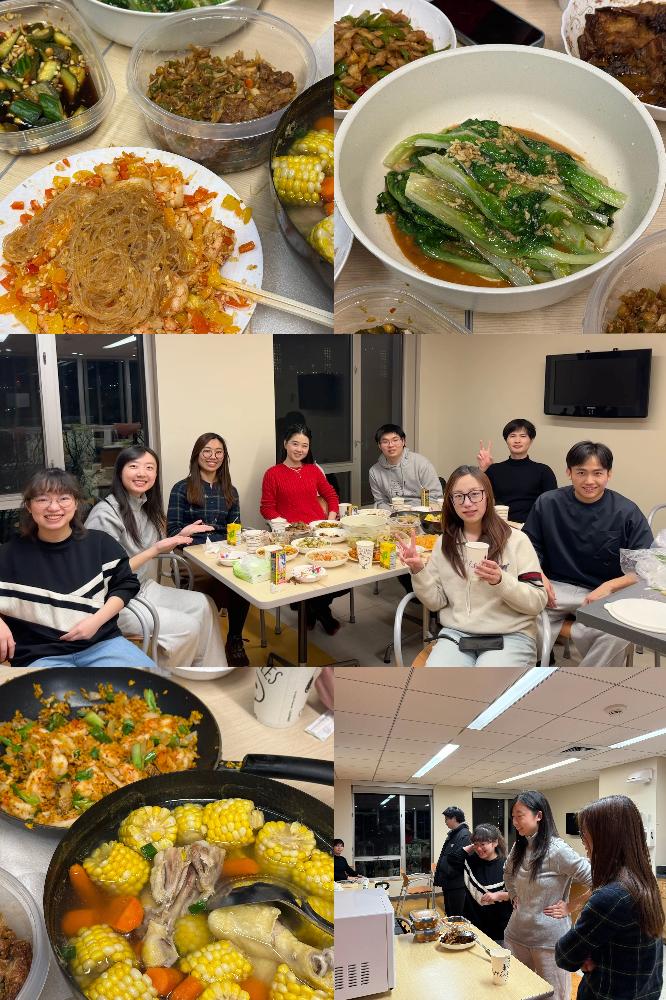
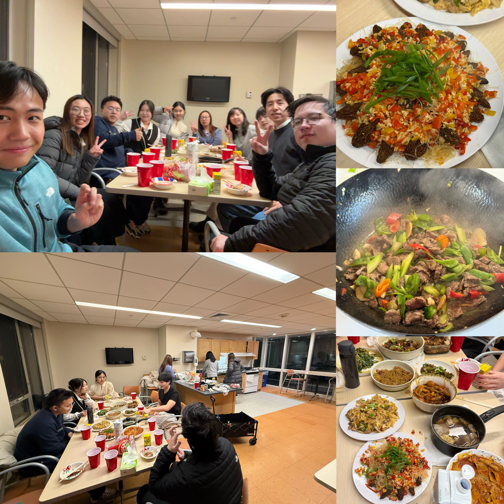

Moments
Beyond the research — people, places, and everyday discoveries.
Sunsets at Kennedy Town
A little tradition I’ve kept alive for three years: bringing our research group together to watch the sunset at Kennedy Town at the start of the new semester.


Happy Teachers’ Day


Cooking Competition
Ashdown House, MIT.


Visitors around the world
Live visitor map is available on the published website.